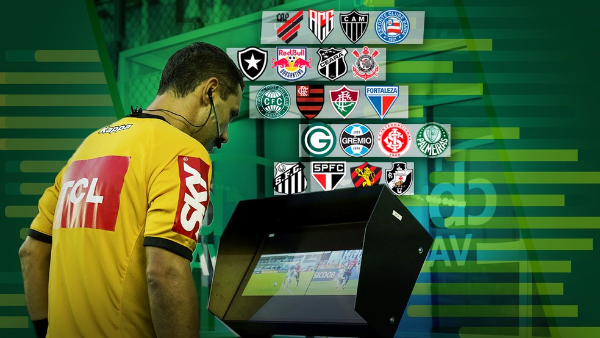

O árbitro de vídeo foi um dos destaques do Campeonato Brasileiro. A tecnologia veio para diminuir os erros da arbitragem de campo e tem cumprido bem este papel. Porém, as maiores críticas ao uso do VAR são o excesso de intervenções e o tempo de jogo parado. Os números do Brasileirão de 2020 comprovam que houve um aumento em ambos.
Das 380 partidas do torneio, 338 foram paralisadas, pelo menos uma vez, para checagem de alguma irregularidade pelo árbitro de vídeo. No total, foram 962 interrupções de jogo, sendo 824 com escuta do ponto eletrônico e 138 para ida à cabine de vídeo na beira do campo. Em 2019, foram 757 paralisações, com 611 com escuta do ponto eletrônico e 146 idas à telinha. Ou seja, houve um aumento de 27% no número de vezes que os jogos foram parados pelo VAR.
Ao comparar rodada a rodada do Brasileirão de 2020, vemos que a maioria teve mais de 20 paralisações no somatório das 10 partidas. O recorde aconteceu na 4ª jornada, quando aconteceram 40 interrupções de jogo. Este é o máximo da história do VAR no Campeonato Brasileiro, iniciada em 2019. No ano retrasado, a rodada com mais intervenções foi a 14ª, quando os jogos foram parados 30 vezes.
Em relação ao tempo consumido pelo VAR, o Brasileirão teve um total de 20 horas, 40 minutos e 23 segundos de jogo parado para checagem de algum lance irregular. Em 2019, esse tempo foi de 18 horas e 37 minutos. A diferença de 2 horas e 3 minutos a mais equivale a um aumento de 11% no tempo total de partida paralisada pelo uso do árbitro de vídeo.
Como no ano de 2020 tivemos mais de 200 paralisações a mais, o tempo médio de jogo parado caiu 13% - foi de 1min29s para 1min17s na edição de 2020. O lance que mais demorou a ser checado por causa do VAR no Brasileirão foi o gol anulado do atacante Pepê (vídeo abaixo) por impedimento do jogador - um total de 5 minutos e 14 segundos.
Os árbitros mudaram de decisão 187 vezes neste Campeonato Brasileiro após a chamada do VAR. Um número bem próximo ao de 2019, quando foram registradas 183 mudanças - quatro a menos que em 2020.